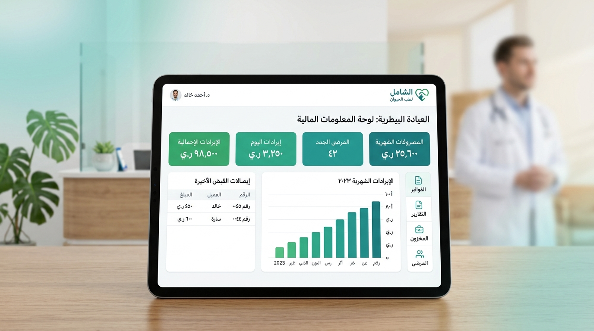

نظام نبض البيطري | VetPulse
دليل الإدارة والكشوفات المالية الذكية للعيادات والمراكز البيطرية

إدارة مالية واضحة ومباشرة لعيادتكم البيطرية
صُمم قسم الحركات والكشوفات المالية ليوفر للطبيب وموظف الاستقبال رؤية واضحة ودقيقة لكافة إيرادات الكشوفات والعمليات ومصروفات التشغيل بكل بساطة.
كيف تُدار حسابات العيادة يومياً بكل بساطة؟
خطوات عملية ومباشرة تجعل النظام يعمل بسلاسة دون تعقيد
لا يحتاج طبيب العيادة أو موظف الاستقبال لكتابة أي معادلات حسابية؛ فبمجرد تسجيل أي كشف، فحص، أو عملية جراحية، يقوم VetPulse بتسجيل الإيراد المالي فوراً في شاشة الحسابات!
الخطوة الأولى: تسجيل خدمات الكشف والعمليات
عند إتمام الكشف الطبي وإدخال أتعاب الخدمة، أو تنفيذ عملية في الجناح الجراحي، تُوثق الحركة المالية مباشرة باسم المربي ونوع الخدمة والمبلغ بالريال اليمني.
الخطوة الثانية: طرق الدفع المعتمدة في النظام
يتيح النظام تسجيل سداد المبالغ بالطرق الرسمية المتاحة:
الخطوة الثالثة: تدوين المصروفات التشغيلية وصافي الأرباح
يمكنكم تسجيل أي مصروف يخص العيادة (شراء كهرباء للمولد، إيجار، أدوات نظافة وتعقيم، أو مستلزمات طبية)، ويقوم النظام تلقائياً بخصم المصروفات من الإيرادات لإظهار صافي الأرباح المحققة.
كشوفات حسابات المربين وسجل المعاملات
شفافية متكاملة وتوثيق لكافة الخدمات والفواتير الصادرة لكل عميل
يوفر تبويب "كشوفات حسابات المربين" سجلاً مالياً منظماً لكل عميل يتردد على العيادة، مما يتيح مراجعة كامل تاريخ تعاملاته، الفواتير الصادرة له، والمبالغ المسددة بكل سهولة واحترافية:
👥 سجل مالي موحد لكل مربي
يظهر في القائمة اسم المربي، رقم هاتفه المعتمد، إجمالي ما دفعه في عيادتكم، وعدد الحركات المالية المسجلة باسمه بدقة تامة.
🔍 تفاصيل كل حركة وفاتورة
عند الضغط على أي مربي، تفتح لكم شاشة تفصيلية كاملة توضح تاريخ كل زيارة، الحيوان المعالج، الخدمات المقدمة، والمبالغ المستلمة.
📄 كشف حساب جاهز للطباعة والتصدير
يمكنكم بنقرة زر استخراج كشف حساب رسمي بصيغة PDF يتضمن ترويسة العيادة وكافة العمليات المعتمدة، لطباعته أو تسليمه للعميل.
📲 مشاركة سريعة عبر الواتساب
إمكانية إرسال نسخة من كشف الحساب أو إشعار المعاملة المالية إلى رقم هاتف المربي عبر واتساب لتعزيز الشفافية والموثوقية.
| اسم المربي | الحيوان | الخدمة الطبية | التاريخ | المبلغ المسدد | طريقة الدفع |
|---|---|---|---|---|---|
| م. أحمد الشامي | سيمبا (قط) | كشف سريري وعلاج معوي | 2026/10/04 | 8,000 ر.ي | نقداً (كاش) |
| د. ريم باعباد | روكي (كلب) | تطعيم خماسي + مضاد طفيليات | 2026/10/03 | 12,500 ر.ي | تحويل بنكي / محفظة |
| أ. طارق الحميري | ميشو (قط) | تنظيف أسنان وإزالة جير | 2026/10/01 | 6,000 ر.ي | نقداً (كاش) |
سلاسة فائقة، سرية تامة، وأمان محلي 100%
تجربة مستخدم فائقة الاستجابة مع حفظ سري لكل حسابات العيادة
تنقل فوري وسلس
التنقل بين التبويبات والفلترة لا يعيد تحميل الصفحة إطلاقاً، بل يستجيب في أجزاء من الثانية.
سرية أرقام العيادة
جميع بيانات الإيرادات والمصروفات مخزنة محلياً على جهازكم ولا ترفع لأي خادم على الإنترنت.
تصدير كشوفات PDF
إمكانية استخراج ومشاركة كشوفات الحساب المالية الرسمية بصيغة PDF جاهزة للطباعة بنقرة زر.
نسخ احتياطي لفلاش
إمكانية حفظ نسخة احتياطية من قاعدة البيانات على فلاش أو قرص خارجي واستعادتها بنقرة زر.
💡 لماذا ستشعرون بالفرق من اليوم الأول؟
- توثيق دقيق لكافة الخدمات: كل خدمة يكتبها الطبيب تصبح فوراً جزءاً من حسابات العيادة لمنع أي ضياع في الإيرادات.
- وضوح الموقف المالي: في نهاية كل يوم أو شهر، تعرفون بدقة إجمالي الإيرادات والمصروفات وصافي الربح المحقق.
- كشوفات حساب موثوقة: كشوفات حساب تفصيلية تمنح العميل ثقة عالية وتوثق كامل تاريخ زياراته وفواتيره.
جاهزون لتدشين النظام وتدريب فريقكم الموقر
يشمل التدشين ضبط الحسابات الافتتاحية، تخصيص فئات المصروفات الخاصة بكم، وتدريب طاقم العيادة على استخدام الشاشة المالية في أقل من ربع ساعة.
نسعد دائماً بتلقي استفساراتكم وملاحظاتكم لتطوير العمل المستمر.